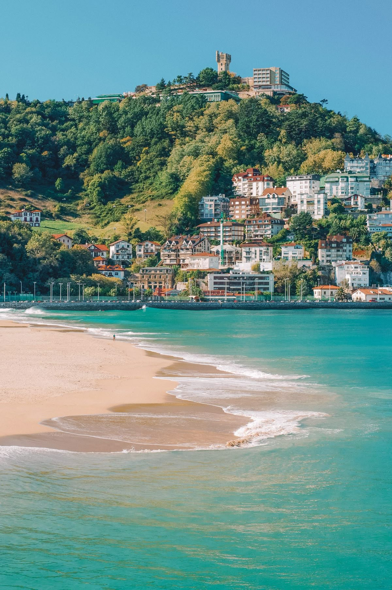
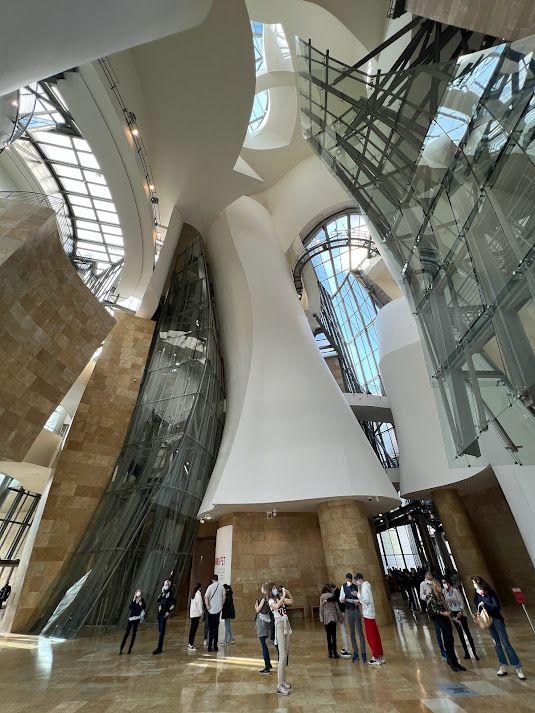
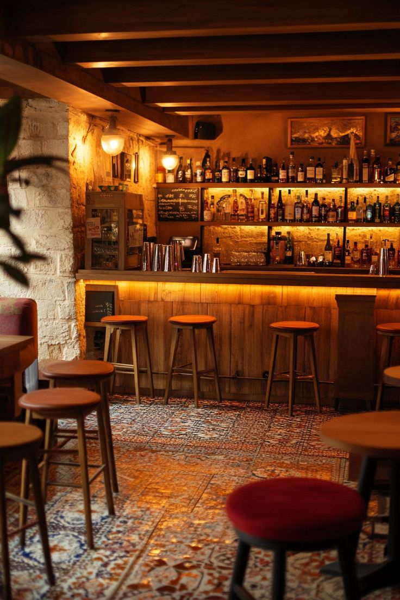
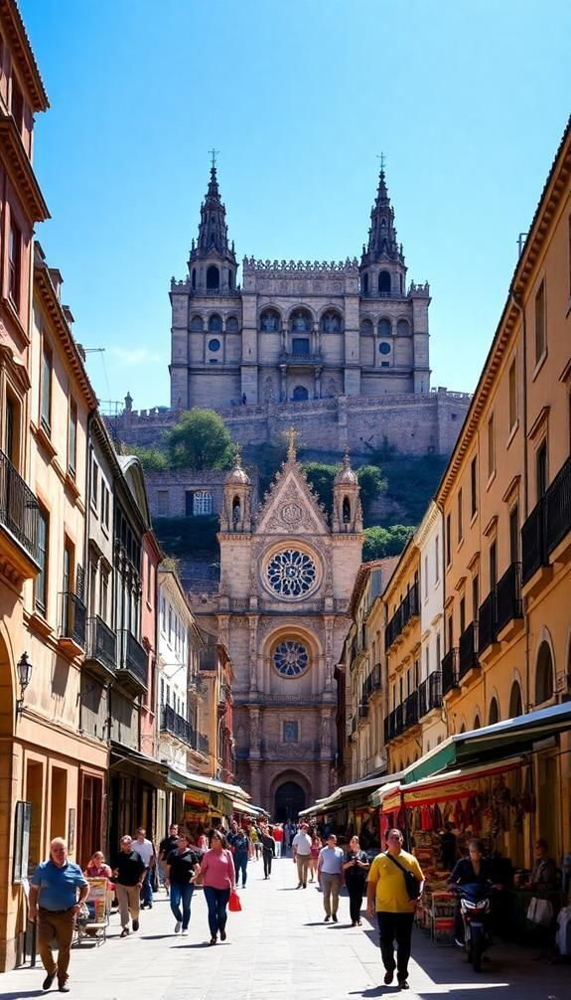

Michelin-Star Dining, Rugged Coastlines & Unique Basque Culture

May-Oct
14hrs from MRU
Basque, Spanish
Euro (€)

Beautiful beach city with highest concentration of Michelin stars per capita

Industrial city transformed by Guggenheim Museum, vibrant cultural hub

Capital city with medieval quarter and green city planning
Discover Europe's oldest and most unique language
Experience the 24-hour drum festival in San Sebastian
Visit traditional Basque farmhouses and learn rural traditions
San Sebastian has the highest density of Michelin stars in the world
Bar-hopping for small bites, a unique Basque culinary tradition
Light, fizzy white wine produced in coastal vineyards
Hiking in the stunning Basque Pyrenees
Visit fishing villages and dramatic cliffs along the coast
Walk the Camino del Norte along the beautiful coastline
6-day food tour with Michelin star dining and cooking classes
8 days combining hiking with gourmet experiences
Euskotren connects cities. Rent car for coastal drives. Bilbao metro is efficient.
Pintxo bars in San Sebastian's Old Town. Reserve Michelin stars months ahead.
Basque (Euskara) is unique, unrelated to any other language. Locals appreciate greetings in Basque.
January drum festival in San Sebastian with 24-hour non-stop drumming
Harri-jasotzea, traditional Basque sport of lifting heavy stones
Traditional farmhouses that are central to Basque rural culture
Unique Basque percussion instrument made of wooden planks
Biarritz and Saint-Jean-de-Luz offer elegant seaside resorts just across the border
Dramatic islet with winding staircase, featured in Game of Thrones
Getaria, Hondarribia, and Bermeo preserve traditional Basque fishing culture
Discover Europe's best-kept culinary secret from Mauritius